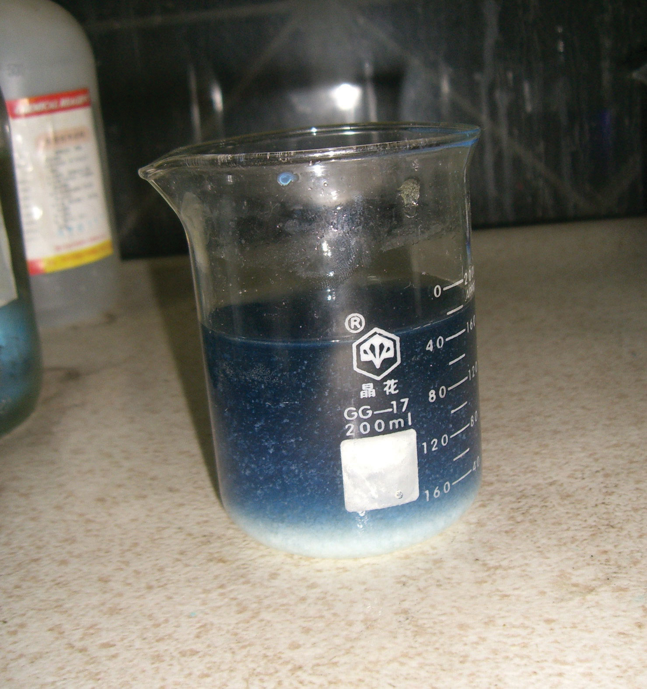

Up to now, we have presented chemical reactions as a topic, but we have not discussed how the products of a chemical reaction can be predicted. Here we will begin our study of certain types of chemical reactions that allow us to predict what the products of the reaction will be.
A single-replacement reactionA chemical reaction in which one element is substituted for another element in a compound. is a chemical reaction in which one element is substituted for another element in a compound, generating a new element and a new compound as products. For example,
2HCl(aq) + Zn(s) → ZnCl2(aq) + H2(g)is an example of a single-replacement reaction. The hydrogen atoms in HCl are replaced by Zn atoms, and in the process a new element—hydrogen—is formed. Another example of a single-replacement reaction is
2NaCl(aq) + F2(g) → 2NaF(s) + Cl2(g)Here the negatively charged ion changes from chloride to fluoride. A typical characteristic of a single-replacement reaction is that there is one element as a reactant and another element as a product.
Not all proposed single-replacement reactions will occur between two given reactants. This is most easily demonstrated with fluorine, chlorine, bromine, and iodine. Collectively, these elements are called the halogens and are in the next-to-last column on the periodic table (see Figure 4.1 "Halogens on the Periodic Table"). The elements on top of the column will replace the elements below them on the periodic table but not the other way around. Thus, the reaction represented by
CaI2(s) + Cl2(g) → CaCl2(s) + I2(s)will occur, but the reaction
CaF2(s) + Br2(ℓ) → CaBr2(s) + F2(g)will not because bromine is below fluorine on the periodic table. This is just one of many ways the periodic table helps us understand chemistry.
Figure 4.1 Halogens on the Periodic Table

The halogens are the elements in the next-to-last column on the periodic table.
Will a single-replacement reaction occur? If so, identify the products.
Solution
Test Yourself
Will a single-replacement reaction occur? If so, identify the products.
FeI2 + Cl2 → ?
Answer
Yes; FeCl2 and I2
Chemical reactivity trends are easy to predict when replacing anions in simple ionic compounds—simply use their relative positions on the periodic table. However, when replacing the cations, the trends are not as straightforward. This is partly because there are so many elements that can form cations; an element in one column on the periodic table may replace another element nearby, or it may not. A list called the activity seriesA list of elements that will replace elements below them in single-replacement reactions. does the same thing the periodic table does for halogens: it lists the elements that will replace elements below them in single-replacement reactions. A simple activity series is shown below.
Using the activity series is similar to using the positions of the halogens on the periodic table. An element on top will replace an element below it in compounds undergoing a single-replacement reaction. Elements will not replace elements above them in compounds.
Use the activity series to predict the products, if any, of each equation.
Solution
Test Yourself
Use the activity series to predict the products, if any, of this equation.
AlPO4 + Mg → ?
Answer
Mg3(PO4)2 and Al
A double-replacement reactionA chemical reaction in which parts of two ionic compounds are exchanged. occurs when parts of two ionic compounds are exchanged, making two new compounds. A characteristic of a double-replacement equation is that there are two compounds as reactants and two different compounds as products. An example is
CuCl2(aq) + 2AgNO3(aq) → Cu(NO3)2(aq) + 2AgCl(s)There are two equivalent ways of considering a double-replacement equation: either the cations are swapped, or the anions are swapped. (You cannot swap both; you would end up with the same substances you started with.) Either perspective should allow you to predict the proper products, as long as you pair a cation with an anion and not a cation with a cation or an anion with an anion.
Predict the products of this double-replacement equation: BaCl2 + Na2SO4 → ?
Solution
Thinking about the reaction as either switching the cations or switching the anions, we would expect the products to be BaSO4 and NaCl.
Test Yourself
Predict the products of this double-replacement equation: KBr + AgNO3 → ?
Answer
KNO3 and AgBr
Predicting whether a double-replacement reaction occurs is somewhat more difficult than predicting a single-replacement reaction. However, there is one type of double-replacement reaction that we can predict: the precipitation reaction. A precipitation reactionA chemical reaction in which two ionic compounds are dissolved in water and form a new ionic compound that does not dissolve. occurs when two ionic compounds are dissolved in water and form a new ionic compound that does not dissolve; this new compound falls out of solution as a solid precipitateA solid that falls out of solution in a precipitation reaction.. The formation of a solid precipitate is the driving force that makes the reaction proceed.
To judge whether double-replacement reactions will occur, we need to know what kinds of ionic compounds form precipitates. For this, we use solubility rulesGeneral statements that predict which ionic compounds dissolve and which do not., which are general statements that predict which ionic compounds dissolve (are soluble) and which do not (are not soluble or insoluble). Table 4.1 "Some Useful Solubility Rules" lists some general solubility rules. We need to consider each ionic compound (both the reactants and the possible products) in light of the solubility rules in Table 4.1 "Some Useful Solubility Rules". If a compound is soluble, we use the (aq) label with it, indicating it dissolves. If a compound is not soluble, we use the (s) label with it and assume that it will precipitate out of solution. If everything is soluble, then no reaction will be expected.
Table 4.1 Some Useful Solubility Rules
| These compounds generally dissolve in water (are soluble): | Exceptions: |
| All compounds of Li+, Na+, K+, Rb+, Cs+, and NH4+ | None |
| All compounds of NO3− and C2H3O2− | None |
| Compounds of Cl−, Br−, I− | Ag+, Hg22+, Pb2+ |
| Compounds of SO42 | Hg22+, Pb2+, Sr2+, Ba2+ |
| These compounds generally do not dissolve in water (are insoluble): | Exceptions: |
| Compounds of CO32− and PO43− | Compounds of Li+, Na+, K+, Rb+, Cs+, and NH4+ |
| Compounds of OH− | Compounds of Li+, Na+, K+, Rb+, Cs+, NH4+, Sr2+, and Ba2+ |
For example, consider the possible double-replacement reaction between Na2SO4 and SrCl2. The solubility rules say that all ionic sodium compounds are soluble and all ionic chloride compounds are soluble except for Ag+, Hg22+, and Pb2+, which are not being considered here. Therefore, Na2SO4 and SrCl2 are both soluble. The possible double-replacement reaction products are NaCl and SrSO4. Are these soluble? NaCl is (by the same rule we just quoted), but what about SrSO4? Compounds of the sulfate ion are generally soluble, but Sr2+ is an exception: we expect it to be insoluble—a precipitate. Therefore, we expect a reaction to occur, and the balanced chemical equation would be
Na2SO4(aq) + SrCl2(aq) → 2NaCl(aq) + SrSO4(s)You would expect to see a visual change corresponding to SrSO4 precipitating out of solution (Figure 4.2 "Double-Replacement Reactions").
Figure 4.2 Double-Replacement Reactions
Some double-replacement reactions are obvious because you can see a solid precipitate coming out of solution.
Source: Photo courtesy of Choij, http://commons.wikimedia.org/wiki/File:Copper_solution.jpg.
Will a double-replacement reaction occur? If so, identify the products.
Solution
According to the solubility rules, both NaOH and FeCl2 are expected to be soluble. If we assume that a double-replacement reaction may occur, we need to consider the possible products, which would be NaCl and Fe(OH)2. NaCl is soluble, but, according to the solubility rules, Fe(OH)2 is not. Therefore, a reaction would occur, and Fe(OH)2(s) would precipitate out of solution. The balanced chemical equation is
2NaOH(aq) + FeCl2(aq) → 2NaCl(aq) + Fe(OH)2(s)Test Yourself
Will a double-replacement equation occur? If so, identify the products.
Sr(NO3)2 + KCl → ?
Answer
No reaction; all possible products are soluble.
What are the general characteristics that help you recognize single-replacement reactions?
What are the general characteristics that help you recognize double-replacement reactions?
Assuming that each single-replacement reaction occurs, predict the products and write each balanced chemical equation.
Assuming that each single-replacement reaction occurs, predict the products and write each balanced chemical equation.
Assuming that each single-replacement reaction occurs, predict the products and write each balanced chemical equation.
Assuming that each single-replacement reaction occurs, predict the products and write each balanced chemical equation.
Use the periodic table or the activity series to predict if each single-replacement reaction will occur and, if so, write a balanced chemical equation.
Use the periodic table or the activity series to predict if each single-replacement reaction will occur and, if so, write a balanced chemical equation.
Use the periodic table or the activity series to predict if each single-replacement reaction will occur and, if so, write a balanced chemical equation.
Use the periodic table or the activity series to predict if each single-replacement reaction will occur and, if so, write a balanced chemical equation.
Assuming that each double-replacement reaction occurs, predict the products and write each balanced chemical equation.
Assuming that each double-replacement reaction occurs, predict the products and write each balanced chemical equation.
Assuming that each double-replacement reaction occurs, predict the products and write each balanced chemical equation.
Assuming that each double-replacement reaction occurs, predict the products and write each balanced chemical equation.
Use the solubility rules to predict if each double-replacement reaction will occur and, if so, write a balanced chemical equation.
Use the solubility rules to predict if each double-replacement reaction will occur and, if so, write a balanced chemical equation.
Use the solubility rules to predict if each double-replacement reaction will occur and, if so, write a balanced chemical equation.
Use the solubility rules to predict if each double-replacement reaction will occur and, if so, write a balanced chemical equation.
One element replaces another element in a compound.